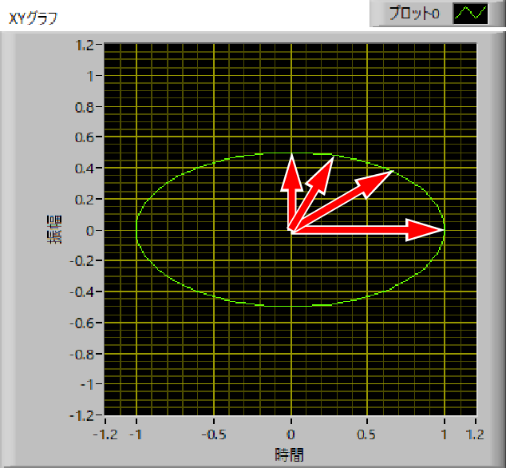

偏光顕微鏡のなぞ-05
どの程度光が透過するか？
斜めの楕円では計算が面倒なので，水平な楕円を考えていきましょう．

この第一象限のX,Yのベクトルの大きさを比較すればいいのです．
しかし，円運動と違って角速度が角度によって変化してしまいますので，単純に積分することはできません．
X,Y，それぞれの波形は，
\(\Large x = E_{0x} \ cos (kz - \omega t + \delta_x) \)
\(\Large y = E_{0y} \ cos (kz - \omega t + \delta_y) \)
ここで，簡単に，z=0, E0x=x0, E0y=y0，δx=0，δy=π/2，とすれば，
\(\Large x = x_0 \ cos ( - \omega t) \)
\(\Large y = y_0 sin ( - \omega t ) \)
となります．
ここで，各時刻での偏光面の傾きを
\(\Large \alpha = \frac{y}{x} \)
とすれば，
\(\Large \alpha = \frac{y_0}{x_0} \ tan \omega t \)
となります．従ってそのときの角度，θ(t)は，
\(\Large \theta (t) = tan^{-1}\alpha = tan^{-1} \left[ \frac{y_0}{x_0} \ tan \omega t \right] \)
となります．また，
\(\Large x(t) = r(t) \ cos ( \theta) \)
\(\Large y(t) = r(t) \ sin ( \theta ) \)
で表すことができます．
この計算は解析的に解くことが（私には．．．）できませんので，Δｔを細かく刻んで，ｘ，ｙの総和を求めてその比を求めてみると，
\(\Large \frac{Sum \ of \ y}{Sum \ of \ x} = \frac{y_0}{x_0} \)
となることがわかりました．つまり，
つまり．．．．
楕円の扁平率がクロスニコル状態での振幅の割合
楕円の扁平率の二乗がクロスニコル状態での強度の割合
と考えて良さそうです．
楕円の扁平率と，xy平面上における位相差，との関係は．．．．．考えます．．．
ここ，を参考にすれば良さそうです．どうも答えは，
\(\Large sin \left( 2 \frac{y_0}{x_0} \right) = sin \left( \delta_y- \delta_x \right) \)
となるようです．